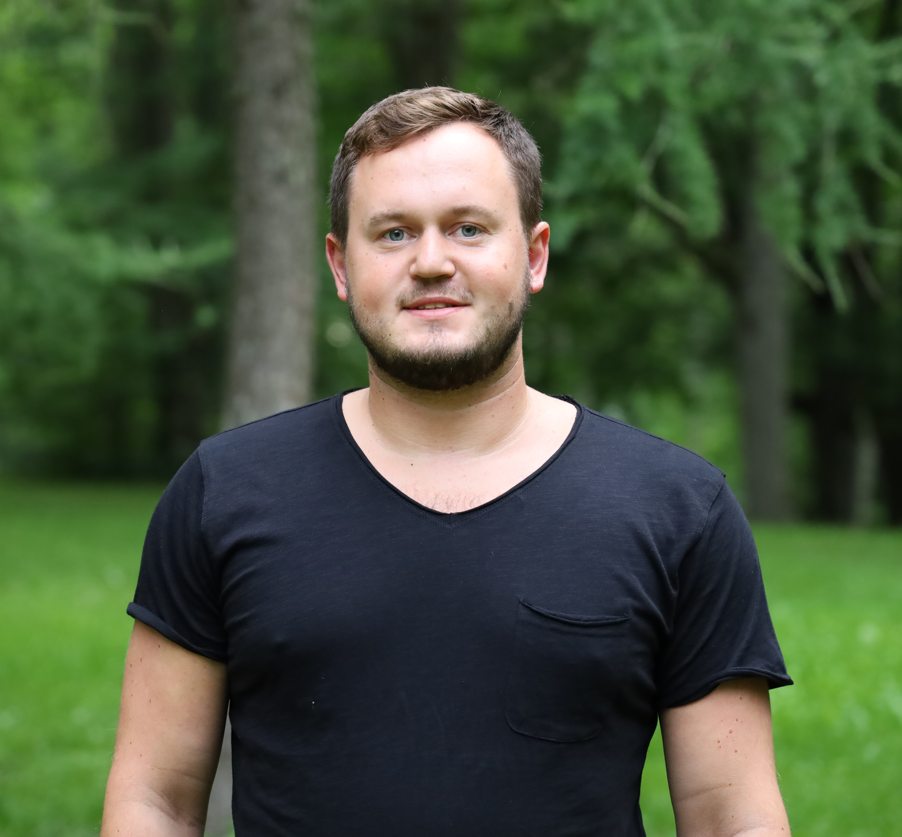

I am looking for a software development internship from April 2024.
I am presently engaged in the study of Python programming at the Software Development Academy.
I have worked as an event manager at East Express OÜ, Ajakirjade Kirjastus AS, Tallinn Centre District Administration, Reisieksperdi AS and Jõhvi Municipality. Examples of the events I have organized are various festivals, conferences (up to 500 participants), finalizing with Jõhvi aviation days. I have also worked as a youth worker in Alutaguse Huvikeskus.
I finished Leisure Management Bachelor's degree at University College Zealand (DK) followed by a Master's degree in Recreation Management at Tallinn University.
I got my basic education at Iisaku Gymnasium and secondary education at Tartu Kivilinna Gymnasium.